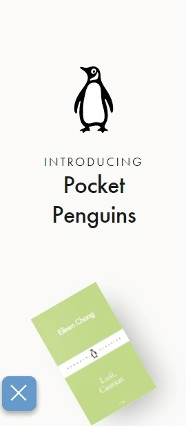
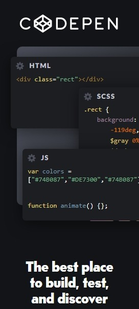
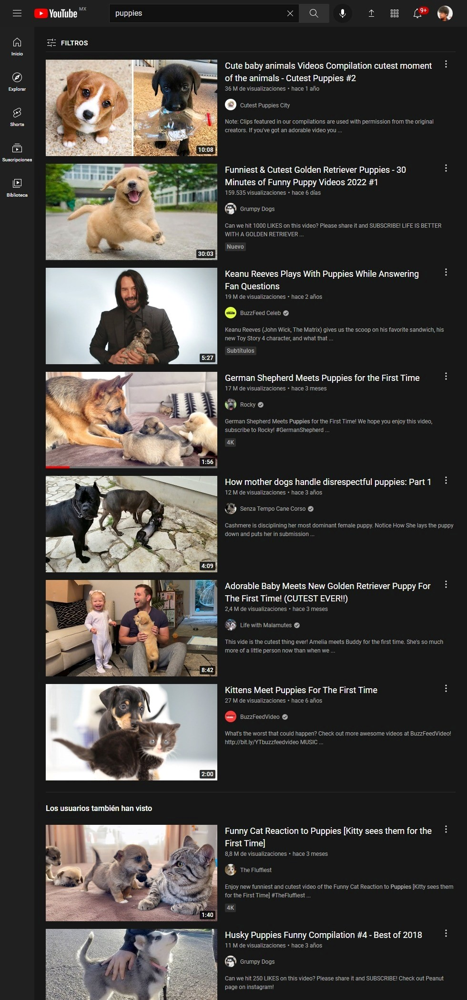

White Space
Pocket Penguins
Pocket Penguin link pocket penguin is a page created to create pequjeños personalized notebooks, its initial design is a clear example of a clean design and with white spaces but well enough done to look elegant and pleasing to the eye in my opinion
PARC: Contrast
Code Pen
Code Pen link Codepen is an excellent example of a contrast design, we can see a black background with bright colors in its fonts and code images interposed one over another, this page is used to test code in real time if you do not have a code editor.
PARC: Repetition
You tube
You Tube link Youtube like other social networks are a clear example of repetition, they are based on showing the same design over and over again but with different content based on grids, You Tube is a site to share videos of almost anything